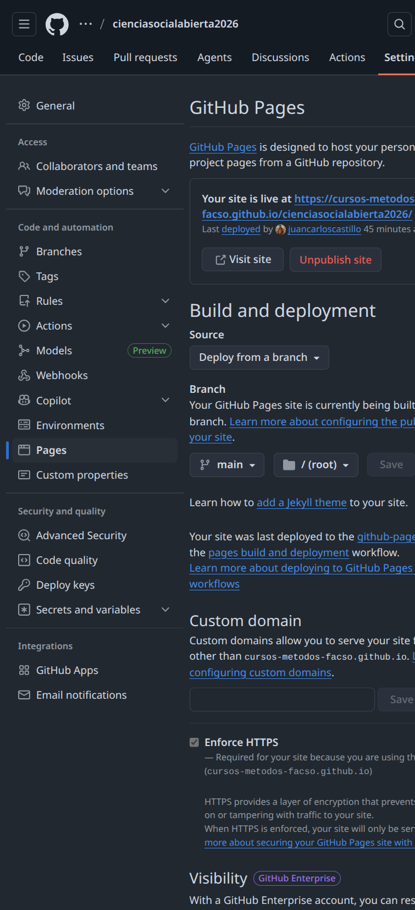
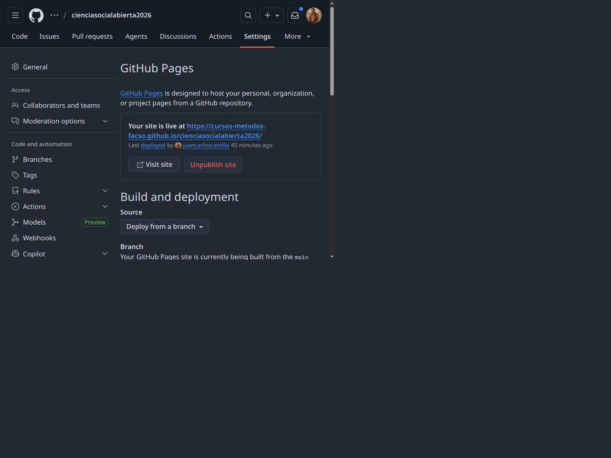
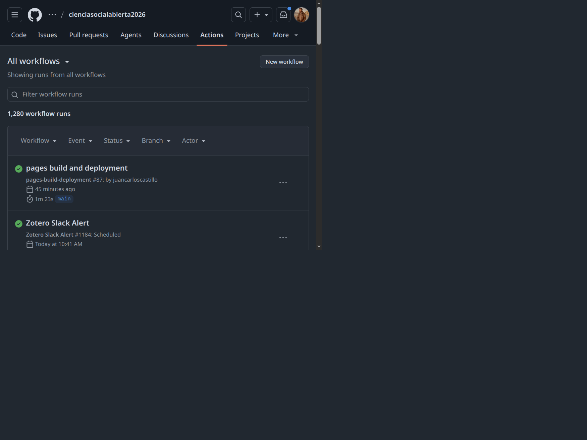
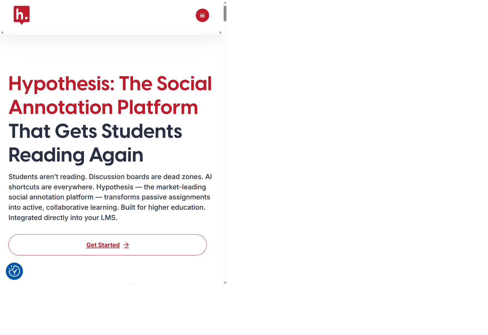
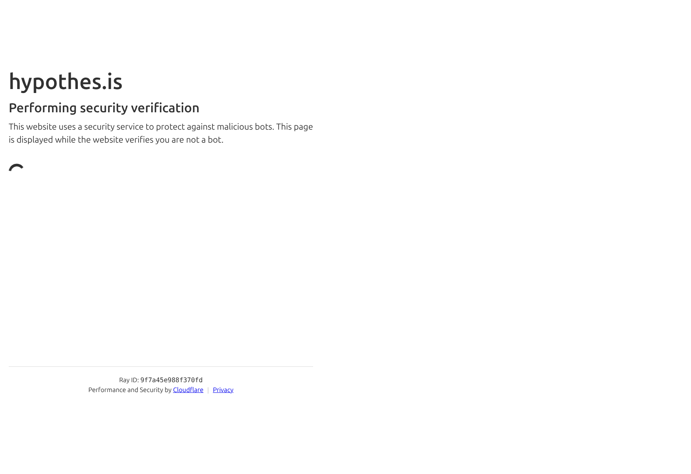
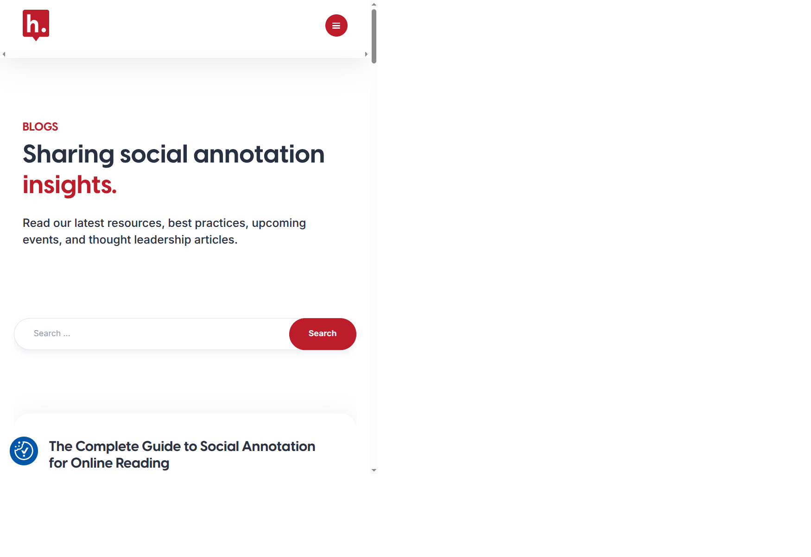

Ciencia Social Abierta
Sesión 6: Publicación de resultados con GitHub Pages
Juan Carlos Castillo & Tomás Urzúa
Sociología FACSO UChile
Primer Semestre 2026
Objetivos de aprendizaje
Al final de esta clase podrán:
- Entender qué es GitHub Pages y para qué sirve en investigación y docencia.
- Publicar un sitio estático desde un repositorio.
- Diferenciar un flujo manual y uno automatizado con GitHub Actions.
- Aplicar una lista mínima de control de calidad antes de publicar.
Contenidos
1. Por qué publicar resultados en la web
2. Fundamentos de GitHub Pages
3. Flujos de publicación
4. Buenas prácticas y errores frecuentes
5. Actividad aplicada
Contenidos
1. Por qué publicar resultados en la web
2. Fundamentos de GitHub Pages
3. Flujos de publicación
4. Buenas prácticas y errores frecuentes
5. Actividad aplicada
1) Por qué publicar resultados en la web
- Transparencia: mostrar resultados, decisiones y actualizaciones.
- Reproducibilidad: vincular código, datos y documentos.
- Comunicación pública: acceso sencillo para estudiantes y colegas.
- Trazabilidad: cada cambio queda registrado en el historial.
- Revisión: facilita la revisión eficiente por pares en diferentes dispositivos
Casos de uso en ciencias sociales
- Sitio del curso con programa, clases y recursos.
- Sitio de proyecto con reportes, tablas y visualizaciones.
- Documentación metodológica para equipos de investigación.
- Repositorio de resultados intermedios y versiones finales.
Contenidos
1. Por qué publicar resultados en la web
2. Fundamentos de GitHub Pages
3. Flujos de publicación
4. Buenas prácticas y errores frecuentes
5. Actividad aplicada
Qué es GitHub Pages
- Servicio de hosting para sitios estáticos.
- Publica HTML, CSS, JS e imágenes directamente desde GitHub.
- No ejecuta backend (sin base de datos o API del lado servidor).
Arquitectura mínima
Estructura sugerida del repositorio
Dos estrategias de despliegue
- Estrategia A: publicar carpeta docs desde main.
- Estrategia B: publicar rama gh-pages generada automáticamente.
Regla práctica: usar docs es simple para cursos, gh-pages es cómoda cuando hay CI más avanzado.
Contenidos
1. Por qué publicar resultados en la web
2. Fundamentos de GitHub Pages
3. Flujos de publicación
4. Buenas prácticas y errores frecuentes
5. Actividad aplicada
Flujo manual (primer acercamiento)
- Editar contenido.
- Renderizar sitio localmente.
- Confirmar que docs quedó actualizado.
- Commit + push.
- Verificar página publicada.
Flujo automatizado (recomendado)
- Editar contenido.
- Commit + push.
- GitHub Actions ejecuta render.
- Action publica automáticamente.
- Revisar logs y sitio final.
Ejemplo de workflow de GitHub Actions
name: Publish Quarto site
on:
push:
branches: [main]
workflow_dispatch:
jobs:
build-deploy:
runs-on: ubuntu-latest
permissions:
contents: write
pages: write
id-token: write
steps:
- uses: actions/checkout@v4
- name: Setup Quarto
uses: quarto-dev/quarto-actions/setup@v2
- name: Render site
uses: quarto-dev/quarto-actions/render@v2
- name: Deploy to GitHub Pages
uses: quarto-dev/quarto-actions/publish@v2
with:
target: gh-pagesVentajas del flujo automatizado
- Menos errores manuales al publicar.
- Historial claro de builds y despliegues.
- Fácil de escalar a trabajo colaborativo.
- Base para pruebas y checks adicionales.
Configuración visual en GitHub (paso a paso)
- Ir a Settings -> Pages del repositorio.
- Definir fuente de publicación (branch/carpeta o workflow).
- Confirmar URL publicada y estado del deploy.
Paso 1: Settings -> Pages

Paso 2: Build and deployment

Paso 3: Verificación en Actions

Contenidos
1. Por qué publicar resultados en la web
2. Fundamentos de GitHub Pages
3. Flujos de publicación
4. Buenas prácticas y errores frecuentes
5. Actividad aplicada
Checklist antes de publicar
- Título, menú y navegación correctos.
- Enlaces internos y externos funcionando.
- Gráficos/tablas visibles en móvil y escritorio.
- Metadatos básicos presentes (título, descripción, autor).
- Página principal actualizada y consistente con contenidos nuevos.
Errores frecuentes
- El sitio no se actualiza: se editó fuente pero no se regeneró salida.
- Rutas rotas: se movieron archivos sin ajustar links.
- Fallo de permisos: workflow sin permisos para publicar.
- Caché del navegador: aparenta no actualizar, pero el deploy sí ocurrió.
Diagnóstico rápido
- Revisar último commit en GitHub.
- Revisar estado del workflow en Actions.
- Abrir logs del paso que falla.
- Confirmar carpeta de salida y rutas relativas.
- Probar en modo incógnito para descartar caché.
Contenidos adicionales para fortalecer el curso
- Reproducibilidad de entornos (versiones y dependencias).
- Accesibilidad web básica (contraste, texto alternativo, jerarquía).
- SEO académico mínimo (metadatos, sitemap, Open Graph).
- Analítica ética y mínima para monitorear uso del sitio.
- Gobernanza: ramas protegidas, revisiones y permisos del equipo.
Comentar sitios web con Hypothes.is
Hypothes.is permite anotar y discutir textos directamente sobre páginas web y PDFs.
- Útil para lectura guiada en clase.
- Permite comentarios individuales o por grupos.
- Deja evidencia del proceso de lectura y argumentación.
Paso 1: Crear cuenta
- Ir a web.hypothes.is y seleccionar la opción de registro.
- Completar correo, usuario y contraseña.
- Confirmar el correo para activar la cuenta.

Paso 2: Registro en hypothes.is

Paso 3: Comentar una web
- Instalar la extensión de navegador de Hypothes.is.
- Abrir una página web y activar el panel de anotaciones.
- Seleccionar texto, escribir comentario y etiquetar.
- Elegir visibilidad: público o grupo privado del curso.
Usos recomendados en docencia
- Preguntas de lectura obligatoria sobre papers o noticias.
- Comentarios entre pares para discusión previa a clase.
- Marcado de conceptos clave, métodos y evidencia empírica.
- Revisión crítica de fuentes y trazabilidad de argumentos.
Recursos y ejemplos de uso

Contenidos
1. Por qué publicar resultados en la web
2. Fundamentos de GitHub Pages
3. Flujos de publicación
4. Buenas prácticas y errores frecuentes
5. Actividad aplicada
Actividad en grupos (20 minutos)
Objetivo: implementar GitHub Pages en el repositorio grupal del trabajo de reproducibilidad.
Referencia de estructura base (protocolo IPO): https://github.com/data-soc/template-repro
- Abrir el repositorio grupal y verificar estructura IPO (input/procesamiento/output).
- Definir una página principal del proyecto (index) con: objetivo del trabajo, equipo y estado de avance.
- Activar GitHub Pages (desde
docs/o flujo con Actions, según su repo). - Publicar al menos una sección de resultados o avances (tabla, figura o resumen analítico).
- Compartir la URL publicada y registrar un problema técnico + cómo lo resolvieron.
Rúbrica breve
- GitHub Pages implementado y funcionando (40%).
- Coherencia con estructura IPO del repositorio (25%).
- Claridad de la página principal del proyecto (20%).
- Reporte del problema técnico y solución documentada (15%).
Cierre
- GitHub Pages permite publicar rápido y con trazabilidad.
- La calidad final depende del flujo, no solo de la herramienta.
- Publicar bien es parte del método de investigación abierta.
Próximos pasos
- Dejar configurado un workflow de publicación automática.
- Estandarizar checklist para todo material del curso.
- Definir calendario de actualización y responsables por sección.

Ciencia Social Abierta | FACSO 2026 | © Hecho en Quarto